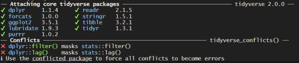

25 * 15[1] 375(45 + 3) ^ 2[1] 230478 / 4[1] 19.5In this course, you will explore the versatility of R, a powerful language for statistical computing and graphics. You will discover the benefits of using R and get started with the basics, and fain confidence with the user-friendly R Studio interface and learn fundamental R concepts. You will also dive into the Tidyverse, a collection of packages for data storage, visualisation and manipulation. This course offers a solid foundation to kickstart your journey with R!
This book is designed to accompany the Introduction to R training that is starting at KNBS. To complete this course, you will need to have R Studio installed on your computer.
If you’re running through this book solo, it is recommended to run through it in order and try out all the of the exercises as you go through. Each exercise has a Solution dropdown, which allows you to view prompts to help with the question and see the answers.
R is an open-source programming language and software environment, designed primarily for statistical computing. It has a long history - it is based on the S language, which was developed in 1976 in Bell Labs, where the UNIX operating system and the C and C++ languages were developed. The R language itself was developed in the 1990s, with the first stable version release in 2000.
R has grown rapidly in popularity particularly in the last five years, due to the increased interest in the data science field. It is now a key tool used by analysts in governments globally.
Some of the advantages:
RStudio is an integrated development environment (IDE) for R. You don’t have to use an IDE but it’s strongly advised as it provides a user-friendly interface to work with. RStudio has four main panels;
You may have noticed that your Script Editor is bigger than the Console or your Environment has suddenly disappeared. In RStudio, you can adjust the size of different panes by clicking and dragging the dividers between them. If you want to maximize a specific pane, such as the Script Editor, use the shortcut Ctrl + Shift + 1 (Windows/Linux) or Cmd + Shift + 1 (Mac) to focus on it. To restore the default layout, press Ctrl + Shift + 0 (Windows/Linux) or Cmd + Shift + 0 (Mac). You can also use the View menu to toggle different panes on and off, ensuring your workspace suits your needs.
If you find the text difficult to read or prefer a different appearance, you can customise the theme, font, and text size in RStudio. Go to Tools > Global Options > Appearance, where you can choose from different editor themes (e.g., light or dark mode), adjust the font type, and increase or decrease the text size for better readability. These changes can help make coding more comfortable, especially during long sessions.
While not necessary, certain changes are almost always recommended for visibility reasons. These include: - Choosing a different theme, as Textmate can be hard on the eyes. This can be done in Tools > Global Options > Appearance > Editor theme:. - Highlight R function calls. This makes functions look a different colour than normal text, which can make reading your code much easier. This can be done in Tools > Global Options > Code > Display > Highlight R function calls. - Use Rainbow Parenthesis. This makes each pair of () in a line a different colour, which can help you catch if you’re missing one and it’s breaking your code. This can be done in Tools > Global Options > Code > Display > Use rainbow parenthesis.
03:00 As a quick exercise, try out some arithmetic in your console:
Now open a new script (File -> New File -> R Script) and save it as Intro.R
Ctrl + EnterSolution
25 * 15[1] 375(45 + 3) ^ 2[1] 230478 / 4[1] 19.5R uses the assignment operator <- to assign values or data frames to objects. The object name goes on the left, with the object value on the right. For example, x <- 5 assigns the value 5 to the object x. You can quickly type the assignment operator in RStudio by pressing Alt + - (Windows) or Option + - (Mac).
Other programming languages tend to use =. The equals sign is used in R but for other purposes, as you’ll find out later. Note: = will actually work for assignment in R but it is not convention.
05:00 Solution
x1 <- 14
x1[1] 14x2 <- x1 + 7
x2[1] 21x3 <- x2 / 3
x3[1] 7c()So how do you assign more than one number to an object? Typing x <- 1,2,3 will throw an error. The way to do it is to combine the values into a vector before assigning. For example, x <- c(1, 2, 3).
Note: all elements of a vector must be of the same type; either numeric, character, or logical. Vector types are important, but they aren’t interesting, which is why they aren’t covered on this course. We advise you to read about vectors in your own time.
05:00 1:10 inside c()?Solution
#1. combine c() to create vector with values 1,2,3
x <- c(1, 2, 3)
x[1] 1 2 3#2. combine c() with 1:10
x <- c(1:10)
x [1] 1 2 3 4 5 6 7 8 9 10#3. Incorrect code: will throw an error
x <- c(2019, year)
x[[1]]
[1] 2019
[[2]]
function (x)
{
UseMethod("year")
}
<bytecode: 0x10a8e78b8>
<environment: namespace:lubridate>#3. Correct code
x <- c(2019, "year")
x[1] "2019" "year"Functions are one of the most important aspects of any programming language. Functions are essentially just R scripts that other R users have created. You could write a whole project without using any functions, but why would we when others have done the hard work for us? To demonstrate how using functions can save us time let’s look at an example.
Imagine you had the following data for test scores of students and you wanted to find the mean score:
test_scores <- c(70, 68, 56, 88, 42, 55)We could extract each individual score from the data frame, add them together and then divide them by the number of elements:
(test_scores[1] + test_scores[2] + test_scores[3] + test_scores[4] + test_scores[5] + test_scores[6]) / 6[1] 63.16667This gives us the mean score of 63.2. But that’s pretty tedious, especially if our data set was of any significant size. To overcome this we can use a function called mean(). To read about a function in R type help("function_name") or ?function_name in the console. By reading the help file we see that mean() requires an R object of numerical values. So we can pass our test_scores data as the argument:
mean(test_scores)[1] 63.16667Not only does this save us time, it makes the code far more readable. While the two approaches above return the same answer, the use of the function makes our intention immediately clear. It’s important to remember it’s not just you that will be using and reading your code.
The values you passed to the mean function are known as arguments. Most functions require one or more arguments in order to work, and details of these can be seen by checking the help file.
Running ?mean shows us that the function mean has three arguments; x, trim and na.rm. You can pass these arguments to a function either by position or name. If you name the arguments in the function, R will use the values for the arguments they’ve been assigned to, e.g.:
mean(x = c(1, 2, 3),
trim = 0,
na.rm = FALSE)[1] 2If you don’t provide names for the arguments, R will just assign them in order, with the first value going to the first argument, etc:
mean(c(1, 2, 3), #These are used for the first argument, x
0, #This is used for the second argument, trim
FALSE) #This is used for the third argument, na.rm[1] 2It is good practice to use names to assign any arguments after the first one or two, to avoid confusion and mistakes!
You will notice that the first time we called the mean function, we didn’t have to specify values for either trim or na.rm. if you check the help file, you’ll notice that trim and na.rm have default values:
mean(x, trim = 0, na.rm = FALSE)When arguments have default values like this, they will use these if you don’t provide an alternative. There is no default value for x, so if you don’t provide a value for x the function will return an error.
05:00 sum() function. What does it do?sum() function have? How many of these have default values?Solution
#1. using sum() function
?sum()
#2.sum() has two arguments: a numeric value or logical vector and 'na.rm'
# whether missing values (NA) should be removed (TRUE or FALSE)
# by default, NA values are ignored (i.e. na.rm = TRUE)
#3. summing values 1 to 8 using sum()
sum(1:8, na.rm = TRUE)[1] 36Being open-source means R has an extensive community of users that are building and improving packages for others. Base R covers a lot of useful functions but there’s lots it doesn’t, that’s when we want to install packages. Each package contains a number of functions, once we install a package we have access to every one of it’s functions.
Packages need to be both installed and loaded before they can be used. You only need to install a package the first time you use it, but you will need to load it every time you want to use it.
Start by opening RStudio, which is an integrated development environment (IDE) for R. You don’t have to use an IDE but it’s strongly advised as it provides a user-friendly interface to work with.
To install a package locally, run install.packages("package_name"), making sure the package name is wrapped in quotation marks. The code below will install the tidyverse package, which is actually a collection of data manipulation and presentation packages.
install.packages("tidyverse")Once installed, you can load the packages using the library() function. Unlike installing packages, you don’t need to wrap package names in quotation marks inside a library call.
library(tidyverse)To know more about a package, it is always useful to read the associated documentation. You can do this by adding a ? in front of the name of any package or function, and running this in the console
?tidyverse
?selectWhile base R has a wide range of functions for data manipulation and visualisation, most analytical code will make use of the tidyverse. This is a specific group of packages which are designed for use in the reading, processing and visualisation of data, and aim to be easy to use for beginner coders and clear to read and write. It is recommended to use the tidyverse packages wherever possible to make code consistent.
This training course will therefore make extensive use of tidyverse packages including dplyr, ggplot2 and tidyr.
The following exercise should be completed by those who are running through the course solo.
Intro.R script.Solution
library(tidyverse)